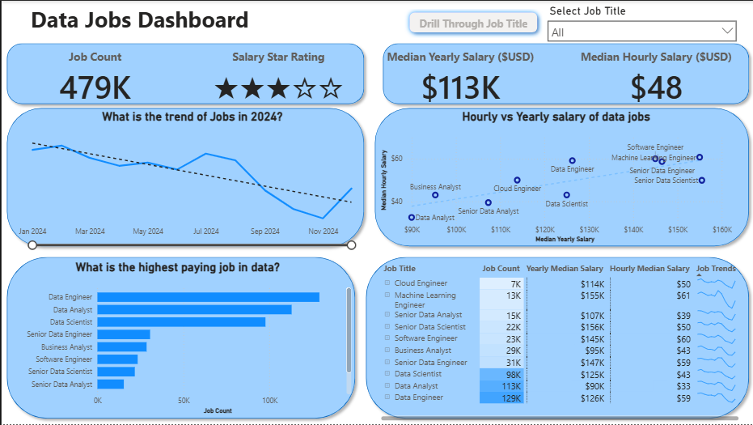
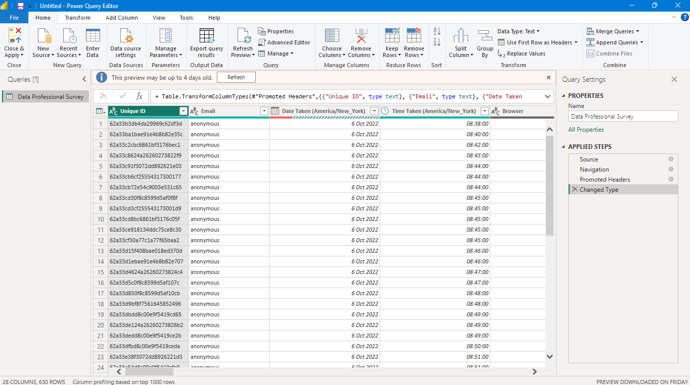
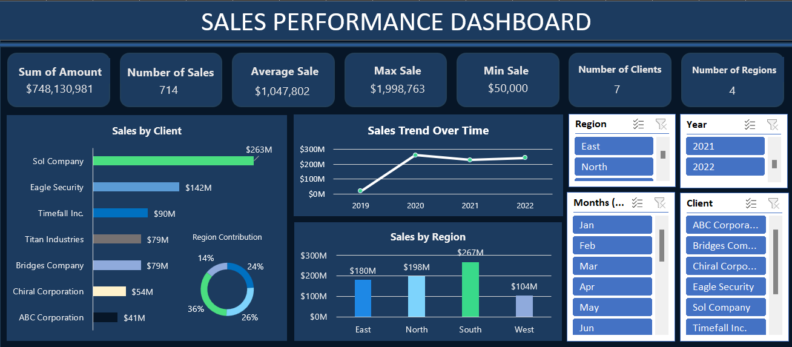
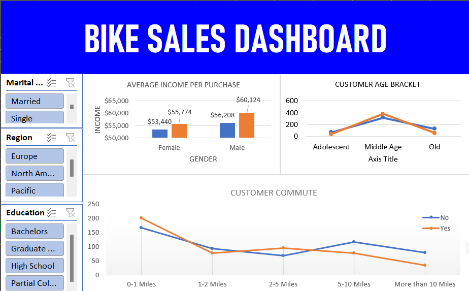

Business Analyst
Turning raw data into Actionable decisions.
I'm Irogementi Covenant. I work across the analytics workflow, from messy spreadsheets to dashboards that stakeholders can actually use to answer one question: what can we learn or do from the information we already have and what actions should be taken?
It Starts with the Business Problem, Not the Chart.
There are six questions I keep coming back to with every dataset. They are not a sequence, they form a continuous loop that guides my analysis.
1. What problem are we actually trying to solve?
2. What Data do we have avaliable and what does the available data tell us?
3. What patterns, trends, or anomalies exist?
4. What factors may be influencing the outcome?
5. What insights matter most to stakeholders?
6. What action can be taken based on those insights?
Tools I'm proficient with.
A portfolio focused on reasoning, not just tools.
Each project is meant to show the thinking from defining the problem to communicating the recommendation.

Power BIData Jobs Salary & Market Intelligence Dashboard (Power BI)
An interactive Power BI dashboard analysing 479,000+ data-related job postings, built to answer a practical question: what does the data job market actually pay, and what does it actually demand?

Power BIData Power Query & Data Modeling (Power BI)
A Project focused on using Power Query to transform and model data for analysis in Power BI.

Power BISales Performance Analytics Dashboard (EXCEL)
This project presents an interactive Sales Performance Dashboard developed in Microsoft Excel to provide valuable insights into sales performance across different regions, clients, and years.

Power BIBike Sales Analytics Dashboard (EXCEL)
To design and develop an interactive Bike Sales Dashboard in Microsoft Excel that transforms raw sales data into meaningful business insights.
Data becomes valuable once it's understood.
My name is Irogementi Covenant and I am a Business and Data Analyst with a growing background in data analytics, business intelligence, technology, and creative problem-solving. I do transform raw data into meaningful insight that helps businesses understand performance, spot opportunity, and make better decisions.
I'm building practical experience across the full workflow collection, cleaning, transformation, exploratory analysis, visualization, reporting, and insight generation using Excel, Power BI, Tableau, SQL, Python, Pandas, NumPy, Matplotlib. to explore data and communicate findings that can actually support a decision.
My interests extend beyond analytics into computer science, networking, cybersecurity, and technology more broadly which shapes how I break problems into components and investigate solutions. Alongside this, a background in graphic design and digital creativity (including tools like PixelLab) informs how I think about communicating what the data shows.
Data & Numbers alone are raw values . The main value comes from asking the right questions and turning insight into informed action.